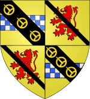

Greve av Angus. Blev minst 52 år.
1154 Forfar, Angusshire, Scotland. [1]
efter 1206 Forfar, Angusshire, Scotland. [1]
Gille Críst, jarl av Angus regerade fram till 1206 som Mormaer av Angus . Han var en son till Gille Brigte av Angus och yngre bror till Adam av Angus .
Nästan ingenting är känt om honom förutom att han gifte sig med Marjorie av Huntingdon, dotter till Henrik av Skottland och Ada de Warenne , och att han efterträddes av sin son Donnchad före 1206. Hans dotter Bethóc (Beatrix) var gift med Walter Stewart, 3:e High Steward of Scotland och var mor till Alexander Stewart, 4th High Steward of Scotland . Det hävdas att Marjorie av Huntingdon gifte sig för det andra (som sin andra hustru), Sir William de Lindsay från Luffness och Crawford (född ca 1148 – död ca 1200), men ett sådant äktenskap förekom inte. Gille Críst, jarl av Angus och Marjorie av Huntingdon var förfäder till Robert I (känd som Robert the Bruce), kung av Skottland (f. 11 juli 1274 - d. 7 juni 1329).[1] [2] [3]
Gille Críst, 4:e jarl av Angus fick av sin första fru, Marjorie av Huntingdon (yngsta dotter till Henrik av Skottland , jarl av Huntingdon och hans fru, Ada de Warenne ), följande son och dotter:
Donnchadh (eller Donnchad), 5:e jarlen av Angus som efterträdde honom före 1206.
Bethóc (eller Beatrix) som var gift med Walter Stewart, 3rd High Steward of Scotland och mor till Alexander Stewart, 4th High Steward of Scotland.
Gille Críst, 4:e jarl av Angus hade av sin andra hustru, Ingibiorg Ericsdottir av Caithness (dotter till Eric Thorliotsson), följande son:
Magnus II, Earl of Orkney and Caithness